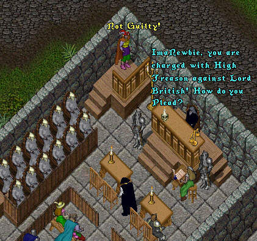
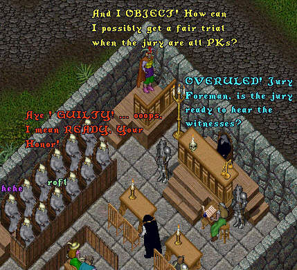
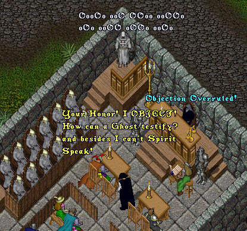
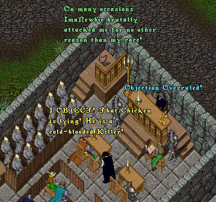
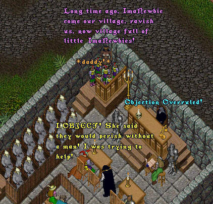
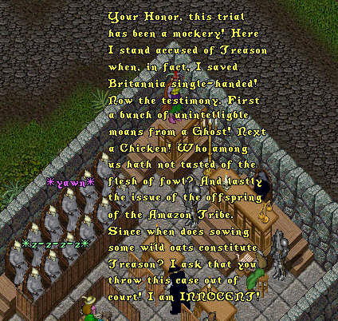
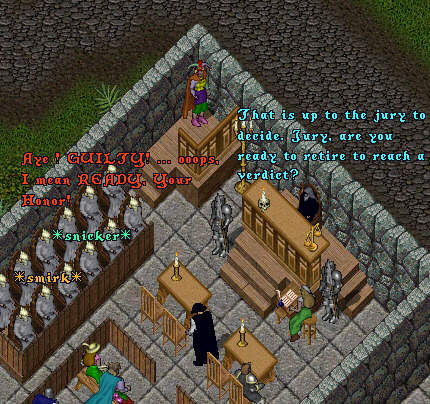

Episode 72: The Conspiracy (The Trial) - After destroying the diabolical crystal machine and saving Lord British, you can imagine ImaNewbie's shock when, instead of being rewarded, he is arrested for Treason! As this episode opens we find ImaNewbie about to have his day in court. Enjoy, but a warning, in order to show the courtroom and all the participants, these images are larger than usual. So kick back; chill; and wait till that little busy icon on your browser has stopped grinding. :)


The proscecutor calls the first witness:
the Ghost of Lord Blackthorne.

Next comes a surprise witness! A certain obnoxious avian with
the initials K.C. that ImaNewbie has has run-ins before with.
(See episodes 10,18,21,25 & 38)

Yet another unexpected witness, a representative of the Lost Tribe of
Amazon Women (see episodes 55,56,57,58). Seems that Ima's brief
sojurn at their village resulted in more than just memories.

Shocked by the devious methods used by the procecutors
to turn the jury against him, ImaNewbie returns to the
witness stand to plead his innocence.

The testimony ends as the judge instructs the jury
to retire to deliberate their verdict.
